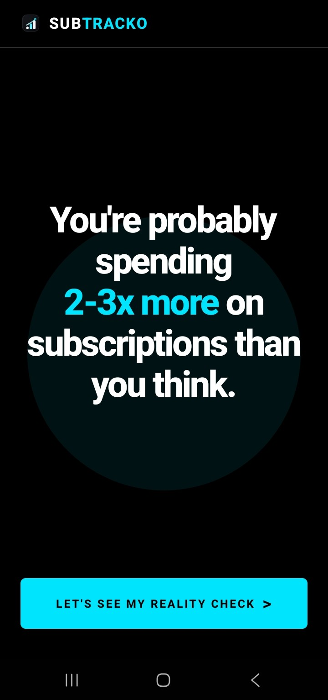
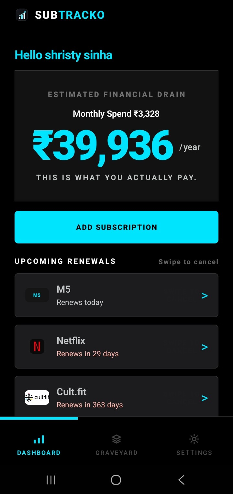
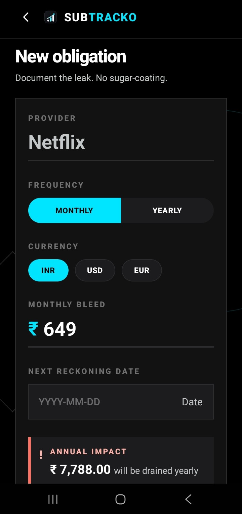
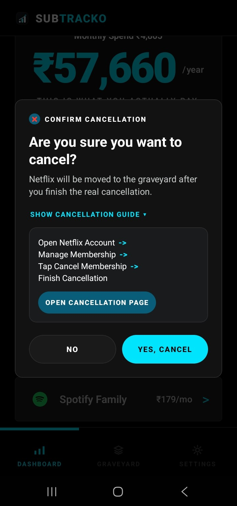
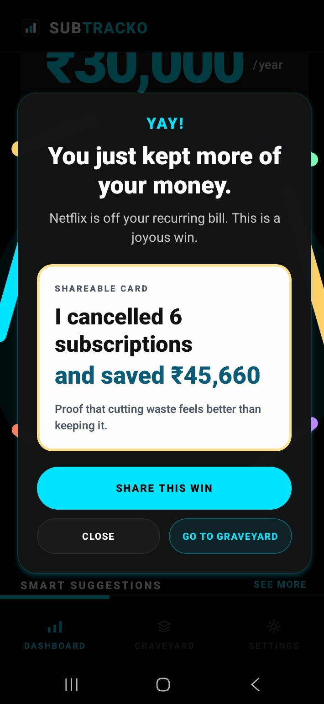
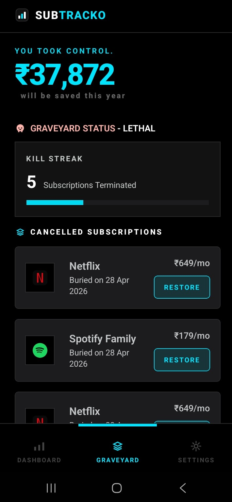

SUBSCRIPTION REALITY CHECK
See the leak. No sugar-coating.
SubTracko is a subscription reality check — it shows you what you actually pay, warns you before renewals hit, and helps you cut recurring waste before it drains you.
Not another passive finance dashboard.
The app doesn't help you track spending. It helps you stop it.
See the bill.
Feel it.
Cut it.
Share the win.


FEATURES
What SubTracko helps you do.
01
Know the true annual drain
Monthly hides the damage. The app shows you the yearly hit.
02
Catch renewals before they hit
No more "I forgot." You act before it charges.
03
Cancel with a guided flow
The app doesn’t leave you thinking. It pushes you to finish it.
04
Build your Plug Streak
Every cancellation counts. Track what you've saved and don't fall back.
05
Smart Suggestions
Browse by category. Spot subscriptions you forgot you had.
SCREEN STORY
Every screen makes it real.
Dashboard
This is where it hits.
The first thing it shows you? The yearly total.
Because monthly numbers hide the truth. The app makes your spending impossible to ignore.
Smart Suggestions surfaces subscriptions by category — so the ones you forgot about don't get to hide.
New Obligation
Every subscription is a commitment.
The moment you add it, the app shows what it really costs. Frequency, renewals, yearly impact - all in one place.
No more "it's just a small amount."

Cancellation
The app doesn't let you stop halfway.
You already decided to cancel. The app guides you till it's done. No friction. No excuses.
The subscription moves to Savings. Restore it anytime if you change your mind.

Victory
Every cut becomes proof.
The moment you cancel, the app shows exactly how much stops leaking — every month, every year.
Share the win. It's not just money saved. It's a choice you made.

Savings
Your Plug Streak lives here.
Every cancelled subscription moves to Savings — with your total recovered, your streak score, and a restore option if you change your mind.
You're not losing a service. You're winning back your money.

HOW IT WORKS
A short path from ignoring... to killing.
Add subscriptions
Put everything in one place.
See the real cost
It turns it into a number you can't ignore.
Kill what's useless
One tap. One less drain.
Build your Plug Streak
Track your savings. Share the win. Don't fall back.
WHAT SUBTRACKO IS ABOUT
SubTracko is not here to budget.
It's here to expose what you're wasting.
And make cutting it feel good.
Because once you start, you won't want to stop.
Back to top